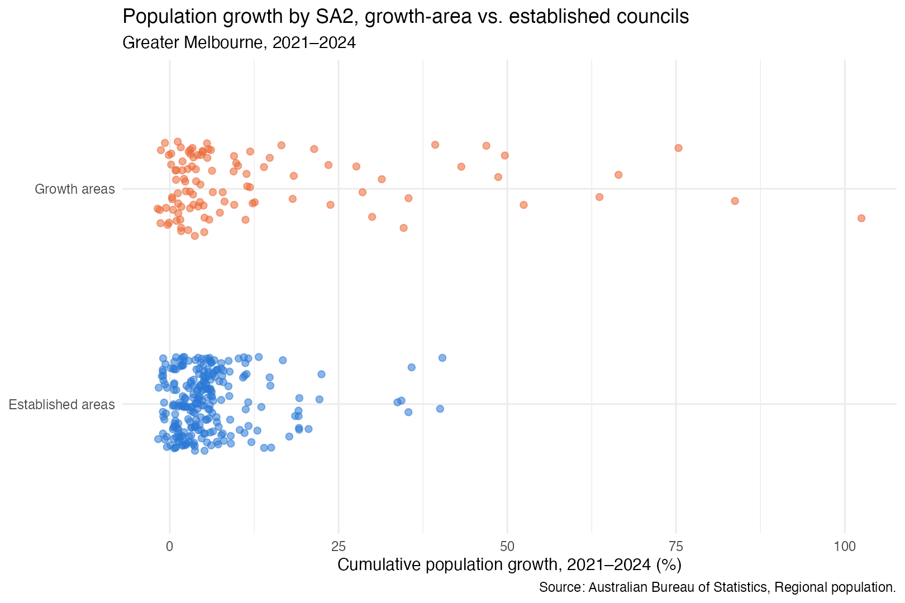
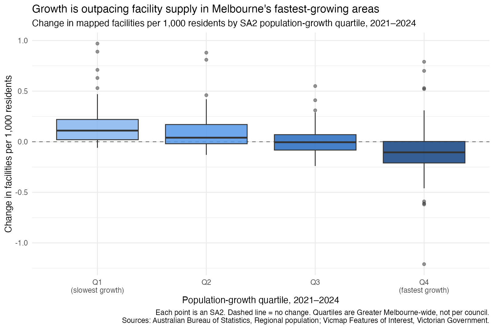
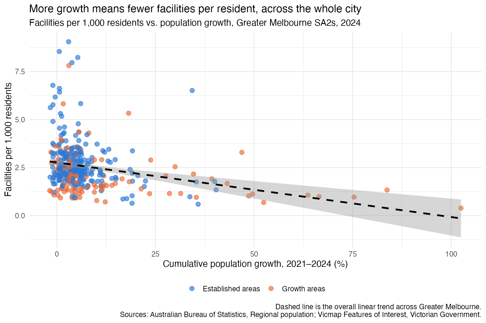
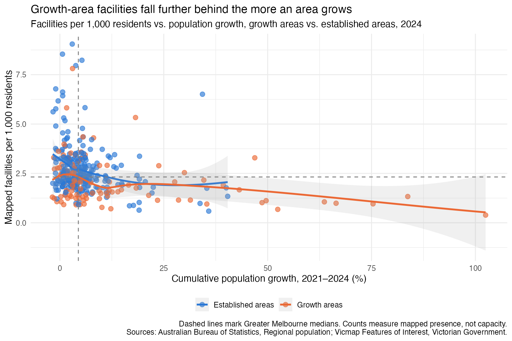
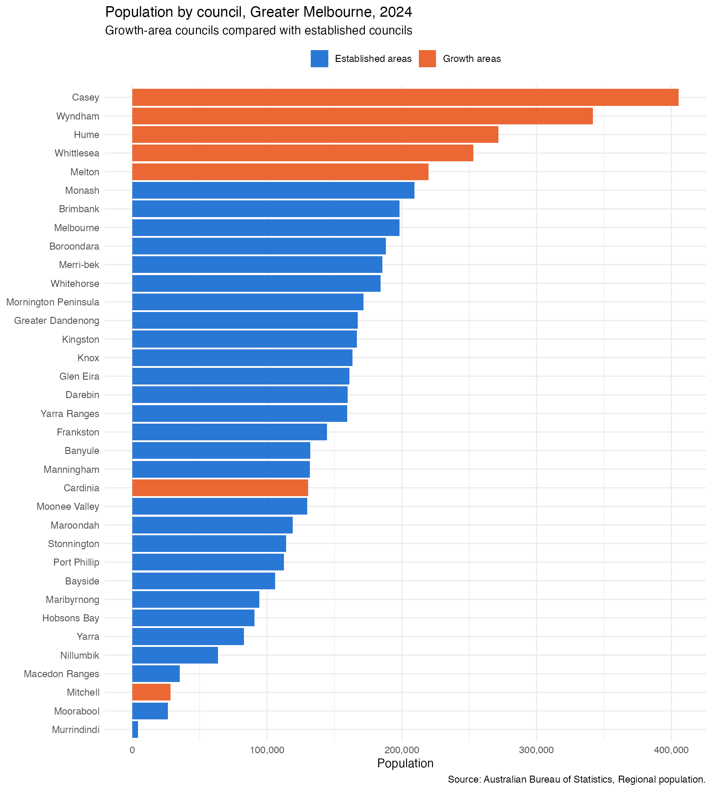

Melbourne: growth and services
The metropolitan pattern before the local detail
We looked at population and facility data for 354 SA2 (Statistical Area Level 2) areas across Greater Melbourne between 2021 and 2024, drawn from ABS population estimates and the Vicmap community facilities catalogue, to see whether services are keeping pace with growth.
They’re not growing evenly. A small group of growth areas on Melbourne’s fringe — Wyndham, Melton, Casey, Hume, Whittlesea, Cardinia and Mitchell — are adding people far faster than the rest of the city. Meanwhile, established areas closer to the centre are growing slowly, if at all.
Within Greater Melbourne, is everyone growing at the same speed?
Melbourne isn’t growing evenly. Some areas are barely changing; others are adding people fast. This first chart shows where the fast growth is actually happening.

Is that unevenness reflected in services too?
If people are arriving unevenly, are services arriving with them? Here’s what happened to mapped facilities in the same places, over the same years.

Does the pattern hold across the whole city?
So far, that’s two snapshots — not yet a trend.

Do high-growth areas end up with fewer services?
Put growth and facilities side by side, area by area, and a shape emerges — one that lines up closely with where the growth-area SA2s actually are.


How much of Melbourne’s growth is happening in each council?
Zooming out from SA2s to whole councils: watch each council’s population change from 2010 to 2024. Use play/pause or the scrubber below the chart.

Source: Australian Bureau of Statistics, Regional population.
By 2024, Melbourne’s five most populous councils are exactly its five largest growth-area councils — Casey, Wyndham, Hume, Whittlesea and Melton — ahead of every established council, including Monash (Greater Melbourne’s largest established council). None of them started there: watch the race to see how recently that changed.
Colour and position mean different things here: colour is a fixed category (growth area or established, per the Victorian Government’s own designation — see below), while position is purely current population rank. The two don’t always agree — Mitchell is officially a growth area but is currently the third-smallest council in Melbourne (28,415 people, 2024), so you’ll see it coloured orange near the bottom of the chart rather than near the top.
But within a council — how is each area doing?
So far, we’ve seen the pattern across all of Melbourne. But a citywide average can flatten real differences between areas in the same council. Now let’s shift the lens to a council view — a Local Government Area (LGA) — and see what stories sit behind the system of a single council, rather than the whole-city view. Pick a council below to see its own local picture.
Data sources.
- Population: Australian Bureau of Statistics, Regional population, estimated resident population by SA2, 2010–2024. https://www.abs.gov.au/statistics/people/population/regional-population
- Facilities: Victorian Government, Vicmap Features of Interest, mapped community facility locations, 2010–2024. https://www.land.vic.gov.au/maps-and-spatial/spatial-data/vicmap-catalogue/vicmap-features-of-interest
- Boundaries: Australian Bureau of Statistics, Australian Statistical Geography Standard (ASGS) Edition 3, SA2 and Greater Capital City Statistical Area structures.
These sources were combined by SA2 and year into a processed dataset (Suburban Futures population and facilities time series, University of Melbourne, 2026), which is not publicly available. The charts on this site show aggregated summaries from that dataset.
Facilities. “Facilities” means mapped facility presence. Counts do not measure capacity, staffing, quality, opening hours or ease of access. Early Vicmap years can also reflect improvements in catalogue coverage, so recent comparisons are preferred.
SA2 (Statistical Area Level 2). “Statistical Areas Level 2 (SA2s) are medium-sized general purpose areas built up from whole Statistical Areas Level 1 (SA1s). Their purpose is to represent a community that interacts together socially and economically.” They generally have a population between 3,000 and 25,000. This page uses ASGS Edition 3 boundaries (2021–2026). Source: Australian Bureau of Statistics — see the ASGS Edition 3 SA2 structure for details.
SA2s aren’t suburbs or councils. “Local Government Areas (LGAs) are considered in the design of SA2s and are often adopted where the LGA boundary satisfies one or more of [several] criteria… In major cities, SA2s often represent single suburbs. Suburb size is variable within and between cities and they do not always make a convenient region to be used directly as an SA2.” All figures on this page are measured at the SA2 level, not the council level. Source: Australian Bureau of Statistics — see the ASGS Edition 3 SA2 structure for details.
Melbourne’s growth areas. “Areas on the fringe of metropolitan Melbourne around major regional transport corridors that are designated for large-scale change, over many years from rural to urban use. Melbourne has seven growth areas – Cardinia, Casey, Hume, Melton, Mitchell, Whittlesea and Wyndham.” On this page’s charts, “Growth areas” means an SA2 within one of these seven councils, and “Established areas” means every other SA2 in Greater Melbourne. Source: Victorian Planning Authority glossary.